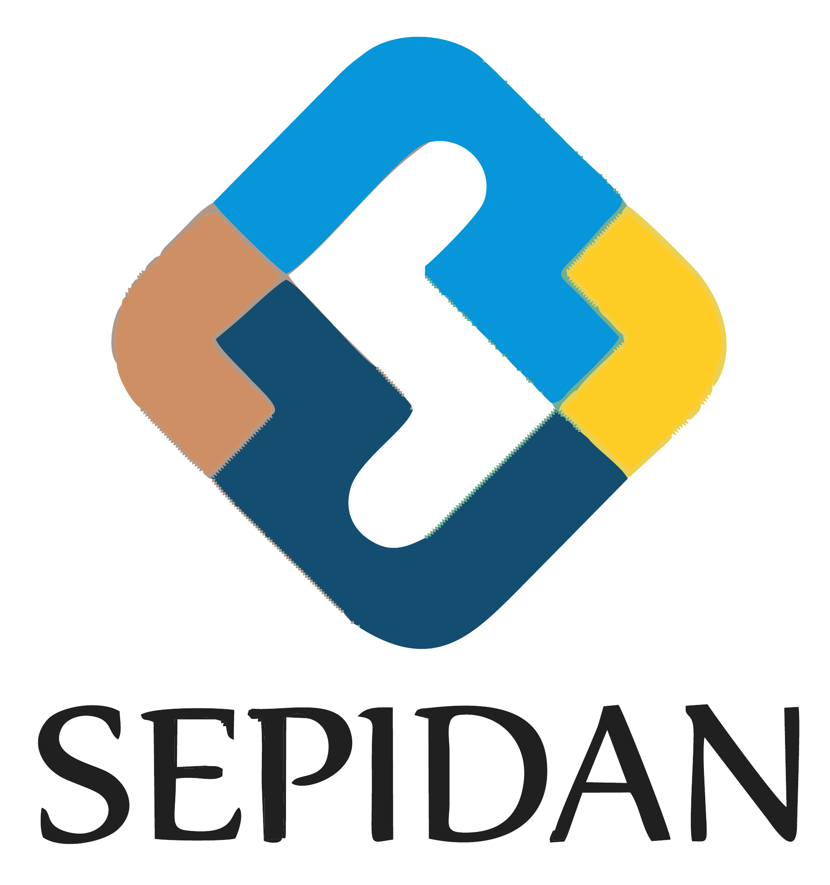

Purpose
Empower young people.
Create access to education, skills, confidence, creative expression, and meaningful opportunity.
About Sepidan
A youth-centered nonprofit advancing education, culture, technology, and leadership development.

Founded 2024 · Kabul
Sepidan Organization was created around a simple belief: confidence, skills, and opportunity are essential foundations for a strong future.
The organization develops inclusive programs supporting academic growth, creative expression, digital literacy, leadership, and professional readiness. Its work includes online education, cultural initiatives, robotics and technology activities, scholarship awareness, and community-based capacity building.
Experienced educators, technical teams, cultural facilitators, and volunteers support this work through a transparent governance structure and collaboration with local and international partners.
Purpose
Create access to education, skills, confidence, creative expression, and meaningful opportunity.
Approach
Bring educators, technical teams, cultural facilitators, volunteers, and partners together around youth development.
Global alignment
Align programs with Sustainable Development Goals related to education, innovation, inclusion, and partnerships.
Reach the organization by email, WhatsApp, or LinkedIn.